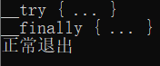
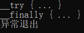
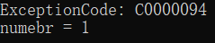
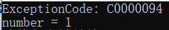
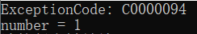
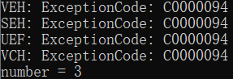
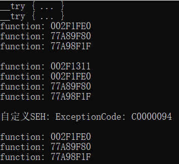
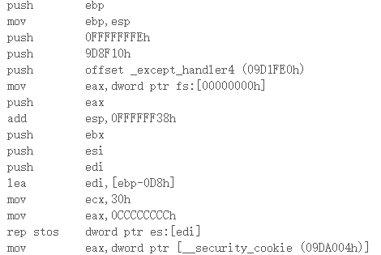

异常机制，就是为了让计算机能够更好的处理程序运行期间产生的错误，从编程的角度来看，能够将错误的处理与程序的逻辑分隔开。使得我们可以集中精力开发关键功能，而把程序可能出现的异常统一管理。
windows提供了异常处理的机制，使得你有机会挽救自己即将崩溃的程序，大体上来说它提供了以下处理异常的机制：
- SEH-结构化异常处理
- VEH-向量化异常处理
- VCH-向量化异常处理
结构化异常处理
Structed Exception Handler(结构化异常处理)简称SEH，是微软提供的一种处理异常的机制。
在VC++中，通过提供四个微软关键字使得程序员能够良好的使用这一机制，分别是：
__try、 __finally、 __except、 __leave
接下来简要说明一下用法
终结处理器
由 __try、 __finally 和 __leave构成。能够保证无论 __try 块中的指令以何种方式退出，都必然会执行 __finally 块。[不会进行异常处理，只进行清理操作]
SEH 的使用范围是线程相关的，每个线程都有自己的函数（SEH链表是局部链表，在堆栈中）
1 | __try |

使用 goto 退出（return 、 break 同理）
1 | __try |

异常处理器
由关键字 __try 、 __except 构成，能够保证 __try 中如果产生了异常，会执行过滤表达式中的内容，应该在过滤表达式提供的过滤函数中处理想要处理的异常
- EXCEPTION_EXECUTE_HANDLER(1): 表示该异常被处理，从异常处下一条指令继续执行
- EXCEPTION_CONTINUE_SEARCH(0): 表示异常不能被处理，交给下一个SEH
- EXCEPTION_CONTINUE_EXECUTION(-1): 表示异常被忽略，从异常处继续执行
1 | // 异常处理器: 由关键字 __try 和 __except 构成 |

顶层异常处理器
TopLevelEH 全称顶层异常处理器(UEF)，这个函数只能有一个，被保存在全局变量中
由于只会被系统默认的最底层 SEH 调用，所以又会被称作是 SEH 的一种，是整个异常处理的最后一环。所以通常都不会再此执行异常处理操作，而是进行内存 dump ，将消息发送给服务器，进行异常分析
在 win7 之后，只有在非调试模式下才会被调用，可以用来反调试
1 | LONG WINAPI TopLevelExceptionFilter(PEXCEPTION_POINTERS ExceptionInfo) |
直接运行exe结果：

向量化异常处理
向量异常VEH
Vectored Exception Handler 向量化异常处理的一种，被保存在一个全局的链表中，进程内的所有线程都可以使用这个函数，是第一个处理异常的函数
1 | LONG WINAPI VectoredExceptionHandler(PEXCEPTION_POINTERS ExceptionInfo) |

向量化异常处理VCH
VCH：和 VEH 类似，但是只会在异常被处理的情况下最后调用
异常的传递过程
1 | LONG WINAPI VectoredExceptionHandler(EXCEPTION_POINTERS* ExceptionInfo) |
直接运行exe结果：

可以得出，异常的传递过程：VEH -> SEH -> UEH -> VCH
探究SEH
1 | // 带有异常处理函数的函数 |

编译器只生成一个 except_handler4 函数

参考文章：
https://docs.microsoft.com/zh-cn/cpp/cpp/structured-exception-handling-c-cpp?view=vs-2019
https://bbs.pediy.com/thread-181067.htm